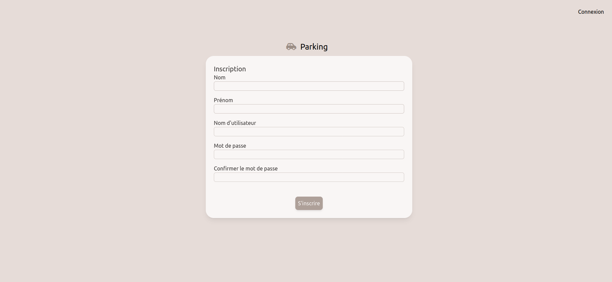
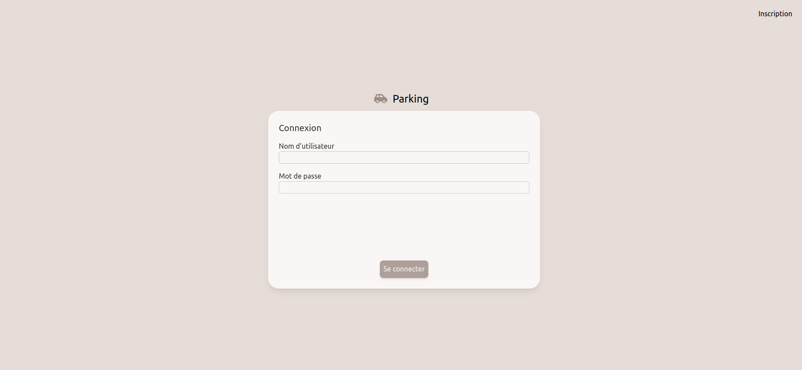

|
Création d'un MCD du site afin de savoir à quoi devra ressembler la base de données.
|
Création d'une maquette de la futur application, afin de montrer lors de notre première itération vers quoi nous nous dirigions.
|
Création d'une page permettant de se connecter ou de s'inscrire dès l'arrivé de l'utilisateur ou de l'administrateur sur l'application.
|
 |
 |
Une fois l'utilisateur connecté, il tombe alors sur une page d'accueil qui lui permettra lorsqu'un administrateur aura validé son inscription de pouvoir louer des places de parking
ou de se placer en file d'attente.

Une fois que le compte de l'utilisateur est vérifié par un administrateur il peut également changer son mot de passe dans les paramètres :

Création d'une page administrateur qui va permettre d'accepter ou non des utilisateurs lors de leur inscription ou encore de gérer les places de parking.